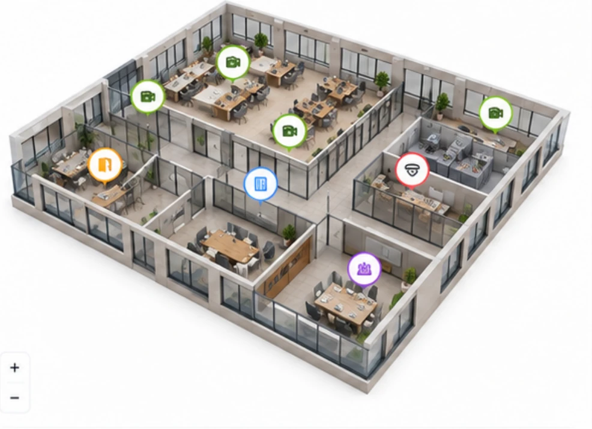

Topshiriq ma'lumotlari
Topshiriq raqamiWO-2024-05124
Obyekt
 Navruz PlazaGR-2025/0934
Navruz PlazaGR-2025/0934
Navruz PlazaGR-2025/0934
ManzilToshkent sh., Shayxontohur tumani,
Amir Temur ko'chasi, 88
Amir Temur ko'chasi, 88
Sana va vaqt24-may, 2024 10:00 – 12:00
Texnik xodim
Ismoilov OtabekTexnik xodim
Topshiriq turi
Rejalashtirilgan texnik xizmat
Prioritet
O'rta
TavsifXavfsizlik va yong'in signalizatsiyasi tizimlari bo'yicha profilaktik tekshiruv.
Obyekt xaritasi
3-qavat
Kamera
Interkom
Eshik qulfi
Yong'in detektori
Yong'in signalizatsiyasi